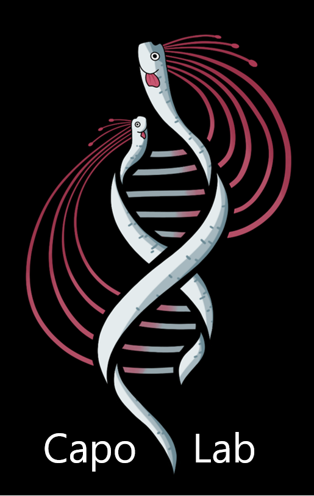

Eric Capo, aquatic microbial ecology lab
Welcome to our research group, where we are dedicated to exploring the ecology of marine and freshwater systems with a focus on aquatic microorganisms (bacteria, archaea and protists).
Our focus lies in understanding the temporal dynamics of microbial communities and their functional responses to environmental change, such as climate, eutrophication, and mercury pollution. Specifically our main research lines are centered on investigating the consequences of climate-induced deoxygenation and freshwater-to-brackish transitions (and vice versa) of water columns on their microbial communities. We achieve this through the use of advanced molecular ecology approaches, such as metabarcoding, (ancient) metagenomics, MAGs-based analysis and metatranscriptomics. By combining genetic information from past and modern environments, we strive to shed light on the intricate relationships between microbial communities and their environment.
We are located at the Department of Ecology and Environmental Science (EMG) at Umeå University, Umeå, Sweden.
You can contact us at eric.capo@umu.se
